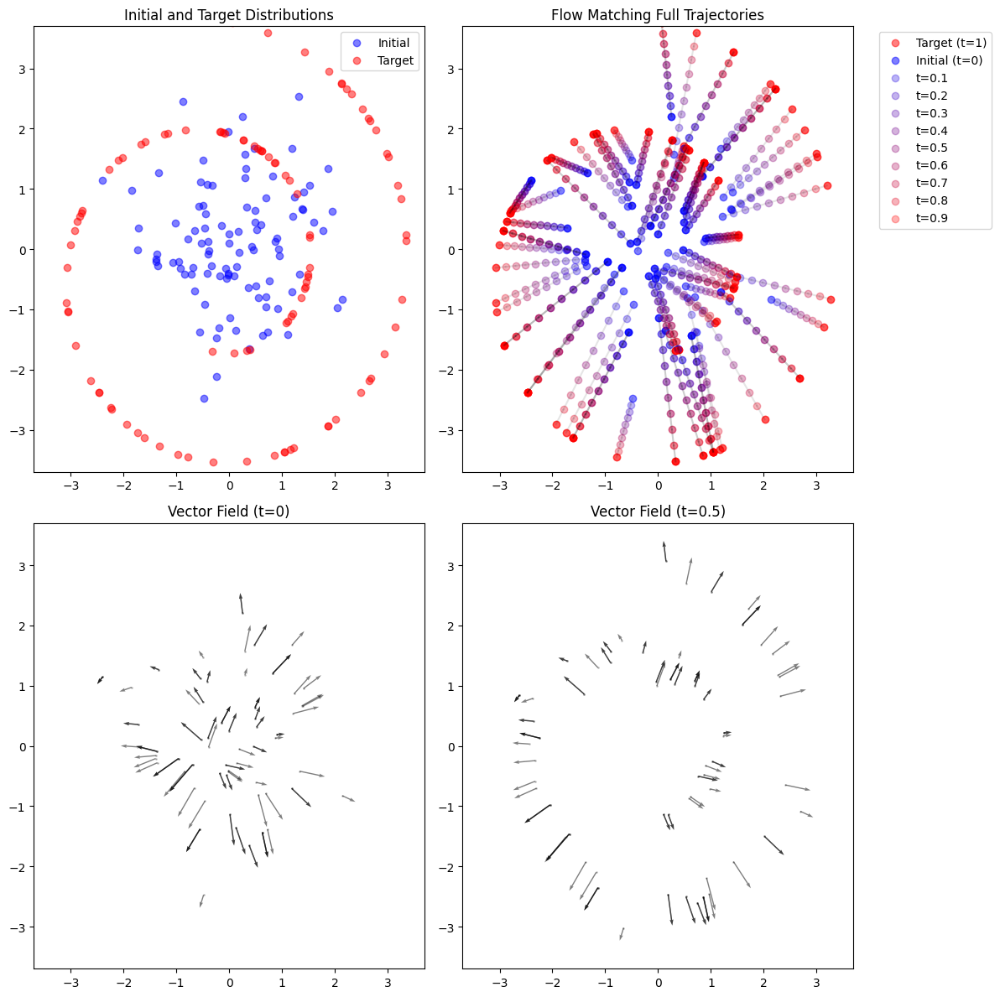
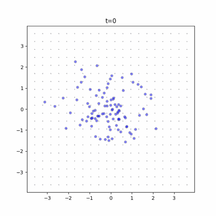
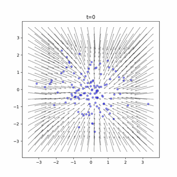
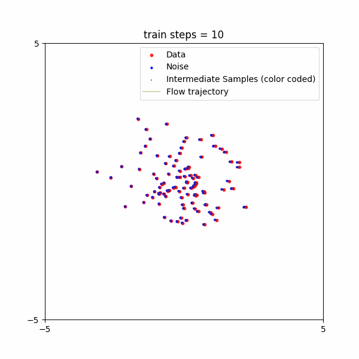

A Visual Story of Diffusion and Flow matching
Diffusion and flow matching are techniques behind frontier generative models for image, video, music, protein structure and more.


On the one hand, developing such models seems daunting. They cost TBs of data, millions of GPU hours, and require a lot of expertise.
On the other hand, the core ideas of diffusion and flow matching are surprisingly simple. Better yet, the recipe stays quite the same, whether you want to generate simple 2D points, images, protein structures, whether you train on hundreds of examples or millions, whether you want to prompt it with text, reference images, key points etc. This means we can familiarize ourselves with the core ideas using toy examples and simple tasks, and scale up to real-world problems and even frontier models in a particular domain. This is why we wrote the tutorials.
The core ideas can be understood through a visual story, without diving into technical details.
A visual story of denoisers
It is an interesting story with two parts:
1. Good data gone bad.
2. They find their way back.
Or in ancient verse (thanks Claude):
1. Lo, pure data, once pristine, doth fall to chaos and decay.
2. Yet through the mists of noise, they journey homeward, finding their true way.
Both diffusion and flow matching uses this idea. Starts with noise, and gradually removes noise to recover the clean data. It does so with a denoiser, which is a machine learning model. The denoiser is like GPS navigation. It tells you where to go next, depending on where you are.
To start, we will look at flow matching on a toy example.
1. Good data gone bad: the teaching
If our task is to generate 2D points that follows a swiss roll pattern, the good data are the red points forming the swiss roll. The random (bad) data are blue points that can be easily sampled from a Gaussian distribution.

Now let’s literally “connect the dots” to form a path from a good data point to a random data point. One way to do it is to use a straight line. We try to pair up red points with closest blue points, so that the lines do not cross each other a lot. This way, the data points do not need to travel a long distance to reach the target.
Along the way, we set up “milestones” as intermediate points. In the top-right section of the figure, the intermediate points are color coded to turn from blue to red. We want to teach a machine learning model to follow the path.
We need to teach the model which direction to go from where the data point is at. Our paths are straight lines, so along each path, the correct direction is simply pointing from the random point to the target point. In the bottom-left section of the figure, the arrows depict the correct directions for each data point when they just start the journey. That is, when they are at the random points. In the bottom-right section, the arrows depict the correct directions when they have traveled the path halfway.
Re-formulate the problem
By showing the paths that good, clean data take to gradually turns into completely corrupted data, we break up a challenging task into small steps. To generate clean data is not necessarily a one step process. Instead, one can take a small step at a time. This incremental task is easier for the model to learn.
In other words, the original generative task has the following input and output:
Input: prompt
Output: data (image, video, audio, etc.)We re-formulate it into a somewhat easier problem for AI to learn:
Input 1: prompt
Input 2: corrupted data (with noise)
Input 3: the time step (a.k.a. the noise level, indicating the proportion of noise still in the corrupted data)
Output: the added noise (or the direction from the corrupted data to clean data)We prepare training examples like the above, and use it to train a denoiser model that can predict and remove the added noise.
This is the teaching.
2. They find their way back: the learning
If we teach well, the learning part becomes easier. Apply the standard supervised learning (or behavior copying), and you will cook some tasty models.
What does the model learn?
The denoiser model learns to map out the direction for any time and location. Time means the current progress of the journey from 0% to 100%, and location means the current state of the data point. These directions over time and location forms a dynamic vector field that changes over “time”. We can visualize the dynamic vector field as a set of animated arrows.
Before learning, the vector field does not do much. In the following animation that barely moves, the tiny dots arranged in a grid are arrows that have not learned the directions. At time goes by from 0 to 100%, the random points are still almost at the same place.

After learning, the effect is impressive. The vector field first seems to move all points towards the center, further away from the original swiss roll, but then the points enter the highway which guides them back to the original swiss roll.

The progress of learning
As the denoiser model learns, the dynamic vector field also evolves over training steps. To see the learning progress, let’s plot the trajectories of the data points as the model is trained with more and more steps.

In early steps, the trajectories are straight lines. Then they start to curve. The model somehow finds that it is easier to first detour towards the center and then zoom back to the target. This is not what we taught the model – the student emerges with a better strategy.
Adventure and mystery abound. To experience the full story, how about rolling up your sleeves and diving into the hands-on tutorials?